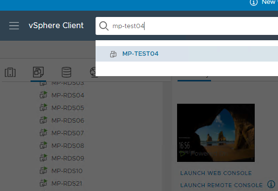
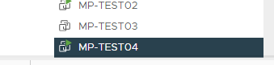
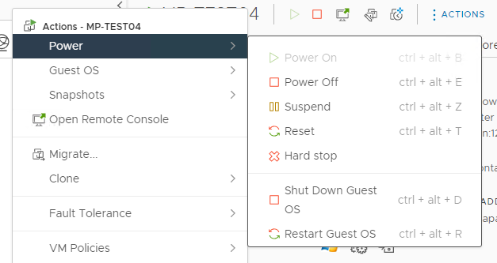
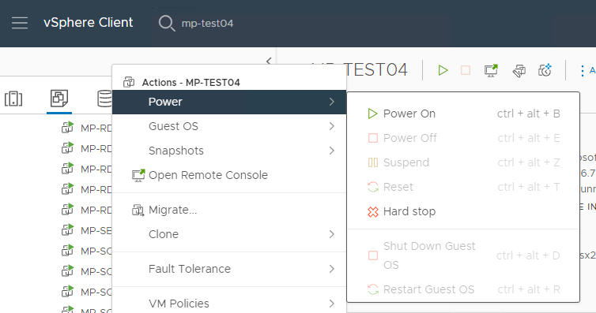

VMWare servers stoppen en starten
Als een server is vastgelopen zodat je er niet meer met RDP op in kunt loggen dan kun je in VMWare een server altijd stoppen en weer opstarten.
Log in op de MP-MGMT12 met je admin-account.
Ga naar https://mp-vcenter21.montapacking.nl en log daar in het met het account admin_voornaam.achternaam@vsphere.local
Vul in de zoekbalk de naam in de van de server.

Klik op de servernaam.
De server wordt nu geselecteerd.

Geef Rechtermuisknop op de server en klik het menu "Power" open.

Probeer altijd eerst "Shut down Guest OS".
Als dat niet meer werkt kies dan "Power off".
Als de server uit staat kies dan vervolgens "Power On"
